2. Manual del administrador
El Backend de la plataforma cuenta con un pánel de administración que permite otorgar los permisos a los distintos usuarios de la plataforma, administrar las oficinas y categorías. A continuación detallaremos más funcionalidades de este módulo.
2.1. Administración General
2.1.1 Inicio de Sesión
A través del enlace https://chileatiende.digital.gob.cl/backend el usuario tendrá acceso a el backend que permitirá administrar la plataforma 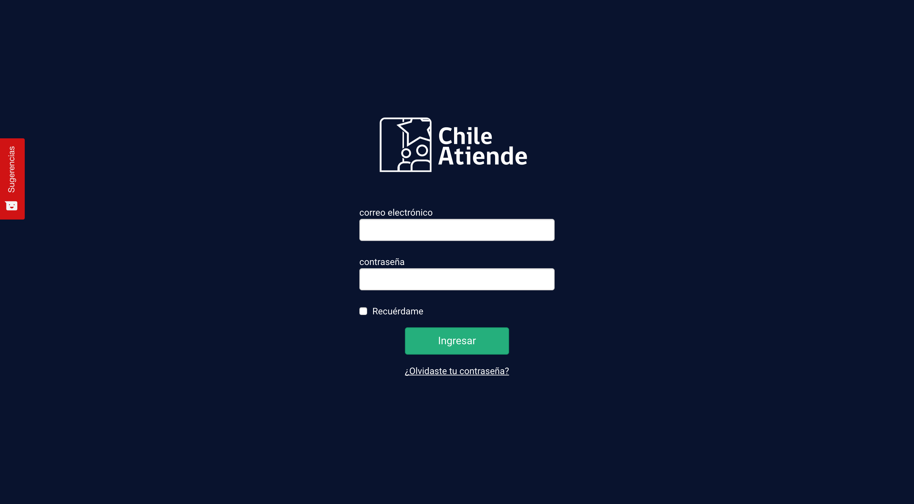
Interfaz Principal
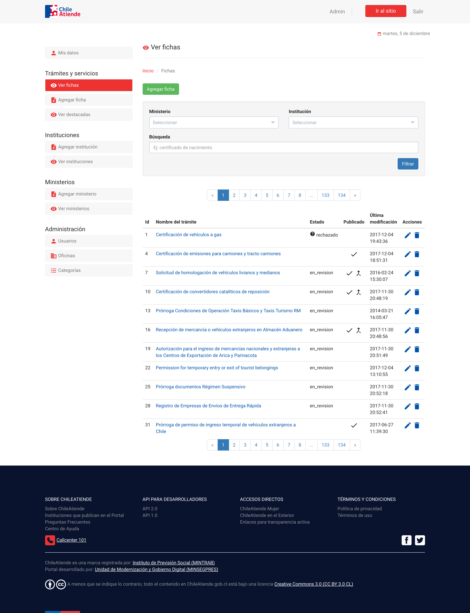
2.1.2 Usuarios
A través de el módulos de administración de usuarios se pueden realizar las siguientes acciones: 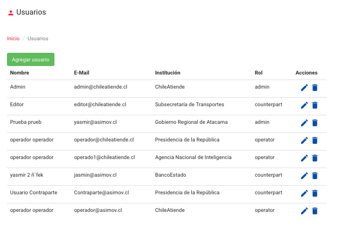
Agregar Usuarios
Para crear un usuario es necesario seleccionar el botón verde "agregar usuario" 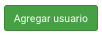. 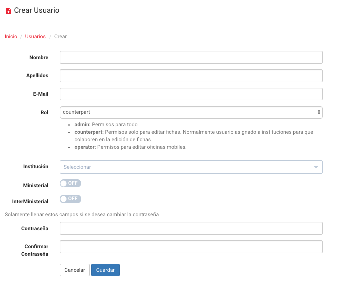 Enseguida se mostrará un formulario con los siguientes campos:
- Nombre
- Apellidos
- Rol (Admin, Editor u operador)
- Institución (Seleccionable de la lista)
- Ministerial (On/OFF)
Rol Ministerial permite al usuario "contraparte" editar las fichas dependientes del ministerio al cual se encuentra asignado.
- Interministerial (On/OFF)
Rol Interministerial permite al usuario contraparte editar todas las fichas independientemente del ministerio al cual pertenezca.
- Contraseña
- Confirmar contraseña
Una vez completados los campos se deberá seleccionar la opción guardar.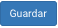
De esta manera se habrá creado un nuevo usuario.
Editar Usuarios
Para el caso de la edición de los usuarios, se deberá seleccionar el ícono y aparecerán los mismos campos del registro mencionados en el punto anterior, pudiendo cambiarse cualquiera de los datos. Una vez hechos los cambios se deberá seleccionar la opción Guardar
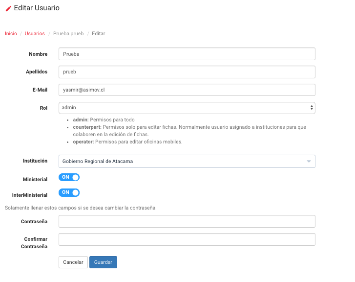
Eliminar Usuarios
Para eliminar un usuario creado en la plataforma se debera seleccionar el ícono y confirmar la acción.
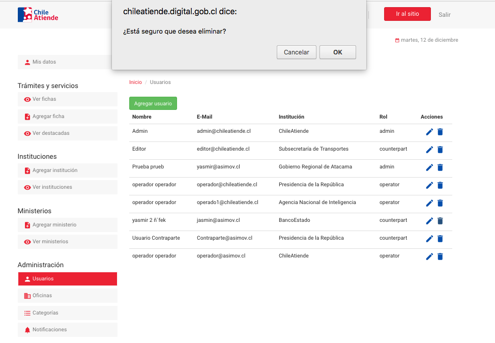
Roles
La plataforma cuenta con tres Roles
- Administrador:
Tiene todos los permisos de la plataforma
- Contraparte
Permisos solo para editar fichas, normalmente Usuario asignado a las instituciones para que colaboren con la edición de fichas.
- Operador
Tiene permisos para editar únicamente oficinas móviles.
2.1.3 Oficinas
El administrador de la plataforma podrá crear, editar o eliminar oficinas, en el caso de el perfil de operador solo podrá crear oficinas móviles dentro de la plataforma.
Agregar Oficina
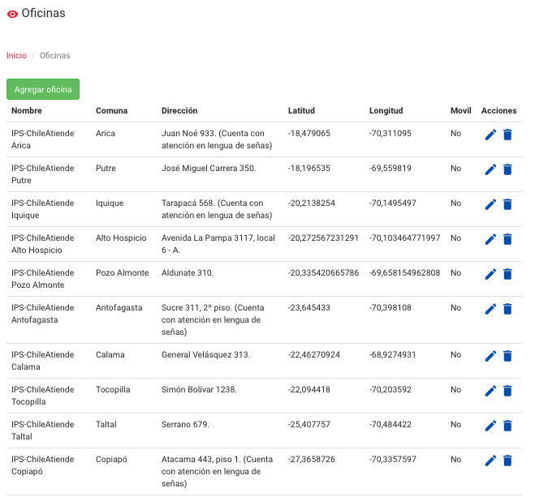
Para incorporar una nueva oficina a la plataforma, se debe seleccionar el botón agregar oficina
Se desplegará un formulario con los siguientes campos a completar:
- Título
- Dirección
- Horario
- Teléfonos
- Fax
- Latitud
- Longitud
- Director
- Institución (Seleccionable entre la lista de instituciones)
- Comuna
- Móvil (Si o No)
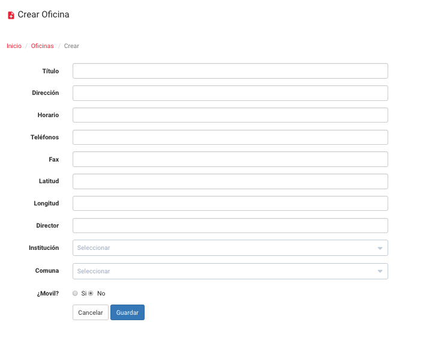
Una vez completados los campos se deberá seleccionar la opción guardar y quedará cargada en la plataforma
Editar Oficina
Para editar una oficina se deberá seleccionar el ícono en donde se mostrará el formulario con toda la información de la oficina que se desea editar, una vez realizados los cambios deseados se deberá seleccionar la opción Guardar .
Eliminar Oficina
Para eliminar una oficina se deberá seleccionar el ícono y solicitará la confirmación de la eliminación de la misma.
2.1.4 Categorías 
Agregar Categorías
Para agregar una categoría se debe seleccionar el botón "agregar categoría", una vez seleccionado se solicitará completar un formulario con el nombre de la categoría e indicar si esta destacada o no, así como el órden en el que se mostrará en la página, cuanto menor sea el número que se le coloque se mostrará de primero.
Editar Categorías
Para editar una categoría se debe seleccionar el ícono ) y se mostrará el formulario para modificar el nombre, la posibilidad de quitar o agregar el destacado para la plataforma en su versión clásica y/o en la versión para el exterior y el órden en el cual seá mostrado.
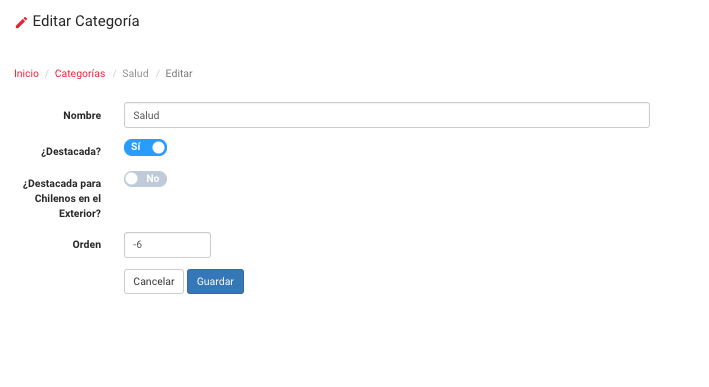
Eliminar Categorías
Para eliminar una categoría se deberá seleccionar el ícono y se solicitará la confirmación de la eliminación.
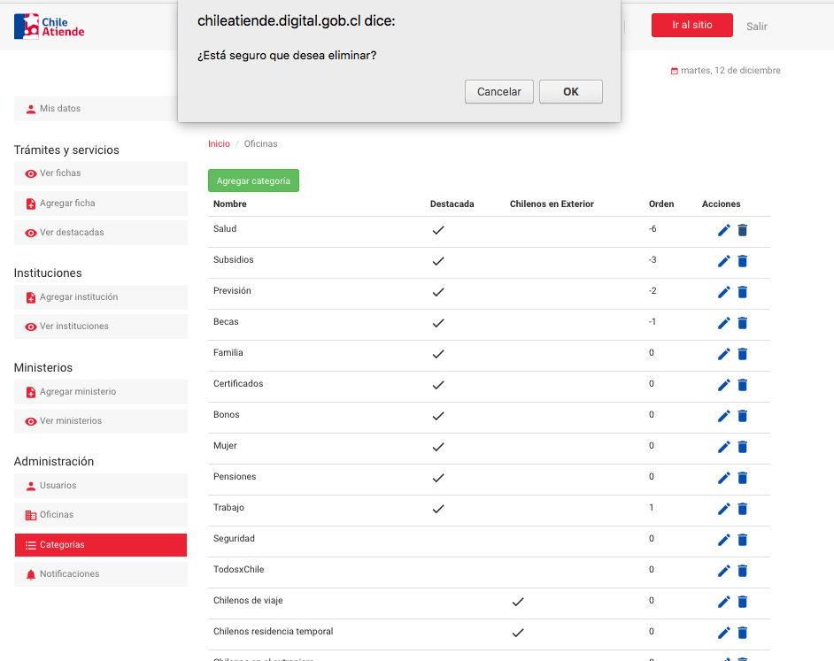
Orden y destacado de Categorías El órden de las categorías viene dado por el número que se le coloca en el campo orden entre menor sea el número será la categoría que se muestre primero.
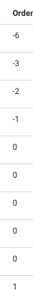
2.1.5 Instituciones
Agregar Instituciones
Permite incorporar instituciones en la plataforma en la pestaña agregar institución se despliega un formulario que requiere:
- Nombre
- Nombre corto
- URL
- Descripción
- Ministerio
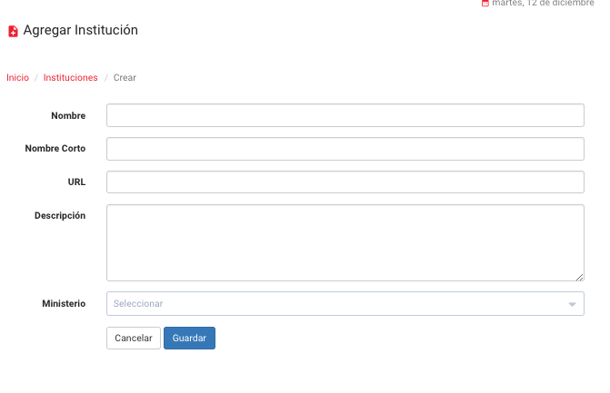
Una vez completado el formulario se debe guardar .
Ver instituciones
En el menú Ver instituciones se verá la lista de instituciones que conforman la base de datos y el ministerio al cual se encuentran asociadas. A través de esta vista se pueden editar o eliminar instituciones si así se requiere.
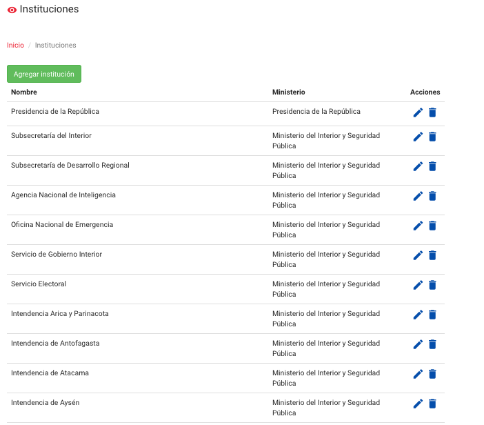
Editar instituciones
Para editar una institución se deberá seleccionar el ícono en donde se mostrará el formulario con toda la información de la institución que se desea editar, una vez realizados los cambios deseados se deberá seleccionar la opción Guardar
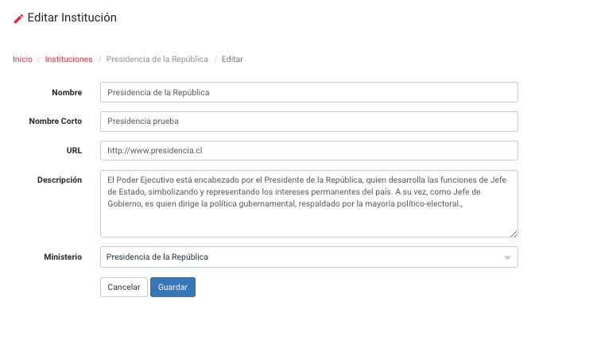
Eliminar instituciones
Para eliminar una institución se deberá seleccionar el ícono y solicitará la confirmación de la eliminación de la misma.
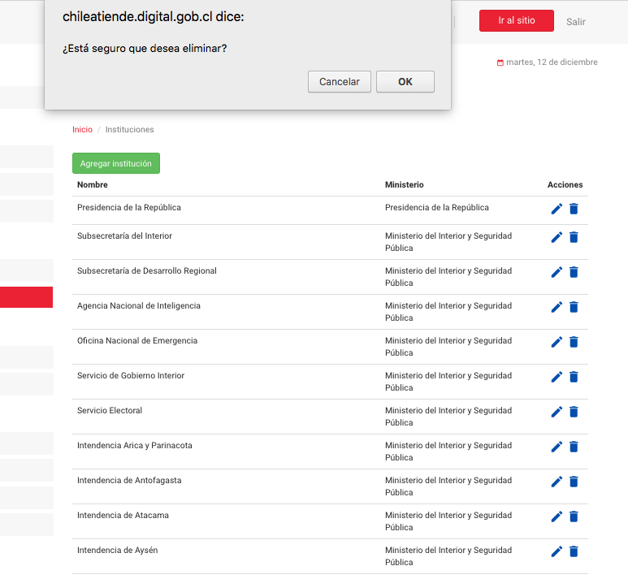
2.1.6 Ministerios
Agregar Ministerio
Permite incorporar Ministerios en la plataforma en la pestaña agregar Ministerio se despliega un formulario que requiere:
- Nombre
- Nombre corto
- Descripción
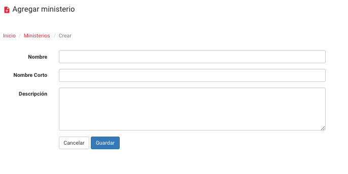
Una vez completado el formulario se debe guardar
Ver Ministerio
En el menú Ver Ministerios se verá la lista de Ministerios que conforman la base de datos. A través de esta vista se pueden editar o eliminar ministerios si así se requiere.

Editar Ministerio
Para editar un ministerio se deberá seleccionar el ícono en donde se mostrará el formulario con toda la información de la ministerio que se desea editar, una vez realizados los cambios deseados se deberá seleccionar la opción Guardar
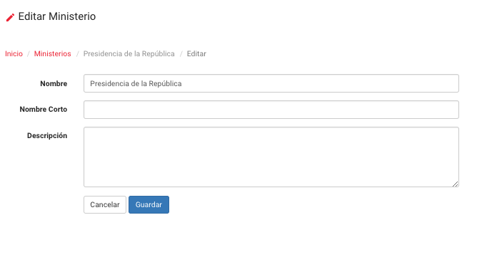
Eliminar Ministerio
Para eliminar una Ministerio se deberá seleccionar el ícono y solicitará la confirmación de la eliminación de la misma.
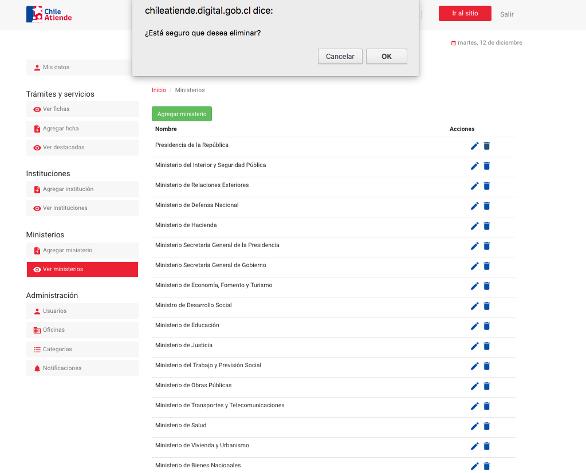
2.1.7 Mis Datos
Permite modificar el perfil de usuario, el formulario posee los siguientes campos:
- Nombre
- Apellidos
- Contraseña
- Confirmar contraseña
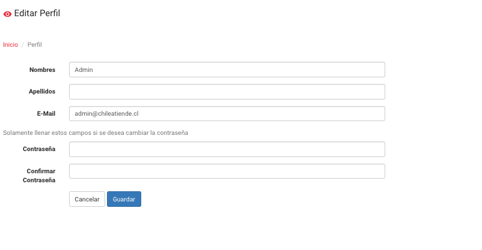
Una vez hecha la modificación deberá guardar los cambios